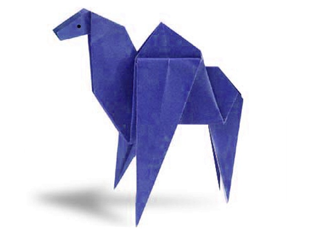

Interesting Facts about Cranes
- In Japanese culture, it is believed that the paper crane- or the orizuru's as it is tradionally called-'s wings carry souls up to paradise.
- The fastest time to make 100 origami cranes is 40 minutes 35 seconds, achieved by Yoneyama Yuichi (Japan) in Nagoya, Japan on 30 November 2010.
- The crane has always been a strong symbol of success and good fortune in Japanese culture, and when folded into origami, it is believed that your heart's desire will come true.
- According to Japanese tradition, folding 1,000 paper cranes gives you a chance to make one special wish come true.
- The origami crane has become an international symbol of peace.

Interesting Facts about Camels
- Camels have three sets of eyelids and two rows of eyelashes to keep sand out of their eyes.
- Camels have thick lips which let them forage for thorny plants other animals can’t eat.
- Camels can completely shut their nostrils during sandstorms.
- Thanks to thick pads of skin on their chest and knees, camels can comfortably sit in very hot sand.
- Their humps let them store up to 80 pounds of fat which they can live off for weeks and even months!

Interesting Facts about Chameleons
- Chameleons can move their eyes separately, with each eye having a field of 180 degrees. This means they can see 360 degrees vision if they need to!
- Chameleons come in a lot of different shapes and sizes.
- Excluding their tail, some chameleons’ tongues can be twice the length of their body. Their tongues consist of both muscles and bones, and can bend round to grab their pray.
- The majority of chameleons survive by eating insects, and some complement this diet by feeding on foliage and fruits.
- Chameleons are tree-huggers.

Interesting Facts about Pigeons
- Pigeons can recognise each letter of the human alphabet, differentiate between photographs, and even distinguish different humans within a photograph.
- Pigeons are renowned for their outstanding navigational abilities.
- Pigeons are highly sociable animals. They will often be seen in flocks of 20-30 birds.
- Pigeons mate for life, and tend to raise two chicks at the same time.
- Both female and male pigeons share responsibility of caring for and raising young.

Interesting Facts about Teddy Bears
- Teddy bears got their name from the story that Teddy Roosevelt refused to shoot a bear cub while on a hunting trip in 1902.
- The first toy stuffed bear was created by German toymaker Margarete Steiff. She created a soft plush with movable arms and legs and a friendly face after taking her nephew to the zoo in 1903.
- The world's smallest stitched teddy bear is a mere 0.29 inches tall!
- The world's largest stitched teddy bear is proudly American! The 55-foot-4 creation was made in 2008 and is named C.T.Dreams, which stands for Connect the Dreams.
- The official term for a teddy bear collector is an ‘arctophile’.

Interesting Facts about Panda
- The giant panda's distinct black-and-white markings have two functions: camouflage and communication.
- Like domestic cats, giant pandas have vertical slits for pupils.
- Mother pandas keep contact with their cub nearly 100% of the time during their first month.
- At 5 months old, giant pandas learn how to climb - sometimes practicing by climbing on their mum.
- Giant pandas spend 10-16 hours a day feeding, mainly on bamboo.

Interesting Facts about Flying Cicadas
- Cicadas have one of the longest insect lifespans.
- Cicadas inundate forests as a survival mechanism
- More than 3,000 species of cicadas exist.
- They can buzz louder than a lawnmower.
- Their wings repel water and bacteria.